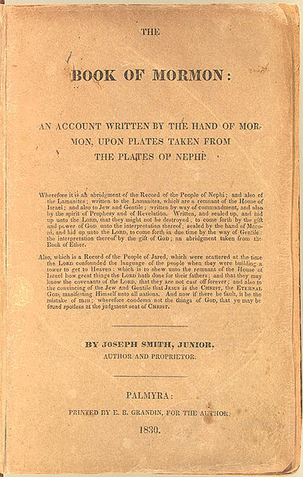

Book of Mormon
By Joseph Smith
Smith stated that the title page, and presumably the actual title of the 1830 edidtion, came from the translation of "the very last leaf" of the golden plates, and was written by the prophet-historian Moroni. The title page states that the purpose of the Book of Mormon is "to show unto te remnant of the house of Israel what great thins the Lord hath done for their fathers.

More information
- Joseph Smith stated that the "title page is not by any means a modern composition either of mine or of any other man's who has lived or does live in this generation."
- Andrew M. Shields, "Official Minutes of Business Session, Wednesday March 28, 2007," in 2007 World Conference Thursday Bulletin, March 29, 2007. Community of Christ, 2007.
- Krakauer, Jon (2003). Under the Banner of Heaven: A Story of Violent Faith. New York: Doubleday.
- ลำดับเหตุการณ์ใน พระคัมภีร์มอรมอน - LDS.org